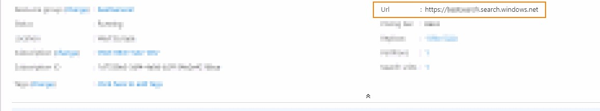

Azure Volltextsuche
Einleitung
Die Azure Volltextsuche unterstützt den Anwender dabei, Artikel im Verkauf und Einkauf schnell aufzufinden. Durchsuchte Tabellen sind:
- Artikel
- Katalogartikel
- Artikelreferenzen (Debitor/Kreditor)
- Originalartikelnr.
Hierfür ist ein Azure Search Service notwendig.
Einrichtung
Suchen Sie nach Azure Suche Einrichtung.
- Vergeben Sie in Azure Index Kunden-ID eine eindeutige, kundenindividuelle ID.
- Im Feld Azure Suche Url tragen Sie die Url des Azure Search Service + /Indexes ein. Sie sollte aufgebaut sein wie https://<searchname>.search.windows.net/indexes. 
- API-Version wird aktuell bis zu 2020-06-30 unterstützt.
- API-Adminschlüssel und API-Abfrageschlüssel finden Sie ebenfalls in Azure.
- Wählen Sie nun die Funktion Verbindungsprüfung aus.
Wenn Sie alles richtig konfiguriert haben, sollten die Felder API Adminschlüssel Verbindung getestet und API Abfrageschlüssel Verbindung getestet gesetzt sein.
Achtung
Bei Änderung einer der o.g. Felder werden die Felder API Adminschlüssel Verbindung getestet und API Abfrageschlüssel Verbindung getestet zurückgesetzt und es können keine Suchanfragen mehr gestellt werden. Es muss erneut die Funktion Verbindungsprüfung aufgerufen werden.
Zuletzt sollten Sie eine Initialisierung vornehmen. Wählen Sie hierfür Initialisiere Azure Search. Es erscheint eine Abfrage, ob die Daten direkt synchronisiert werden sollen.
- Wenn "Ja" angeklickt wurde, werden alle Daten aus den eingangs genannten Tabellen initial einmalig in der aktuellen Session synchron an den Azure Search Service übermittelt (mit Fortschrittsdialog).
- Wenn "Nein" angeklickt wurde, dann werden alle zu übermittelnden Daten in eine Tabelle geschrieben und können manuell einmalig nachträglich oder automatisch dauerhaft verarbeitet werden.
Übermitteln der Daten
Wenn Sie beim Initialisieren der Suche "Nein" gewählt haben, können Sie die Seite Azure Suche Synchronisierung Übersicht öffnen. Hier finden Sie immer alle Einträge, die sich seit der letzten Synchronisierung geändert haben und noch nicht übermittelt wurden. Sie können diese Daten manuell oder automatisch abarbeiten lassen.
- Manuelle Übermittlung: Die manuelle Übermittlung kann über Synchronisierung ausführen gestartet werden.
- Automatische Übermittlung: Für die automatische Übermittlung richten Sie einen neuen Aufgabenwarteschlangenposten mit der Codeunit 5374936 ein. Dadurch werden alle Änderungen in festen Zeitabständen übermittelt.
Die Übermittlung der Daten kann so konfiguriert werden, dass bei jeder Anfrage eine maximale Anzahl an Einträgen übermittelt wird. Hierfür kann auf der Seite Azure Suche Einrichtung das Feld Max. Anzahl Datensätze pro Synchronisierungsvorgang gesetzt werden.
Hinweis
Eine größere Zahl bedeutet weniger Anfragen und dadurch einen Performancegewinn. Sollte jedoch die Abfrage abbrechen, bedeutet dies auch, dass eine Vielzahl an Daten bis zur erneuten Synchronisierung nicht aktuell sind. Bei einer kleinere Zahl bedeutet dies, dass selbst bei einem Abbruch viele Daten aktuell sind, aber auch mehr Anfragen gesendet werden müssen. Dieser Wert sollte nur angepasst werden, wenn es wirklich Performanceprobleme gibt. Der maximale Wert ist 1000.
Verwendung der Suche
Die Suche kann sowohl in den Verkaufs- als auch in den Einkaufsbelegen aufgerufen werden. Hierfür müssen Sie sich zunächst das Feld Volltextsuche in den Zeilen der einzelnen Belege einblenden. Die Suche führt eine Teilstring-Suche durch sobald sie etwas in das Feld Volltextsuche eingeben. Anschließend öffnet sich die Seite Azure Suche Ergebnisse. Auf dieser Seite kann über die Aktion Starte Suche oder durch erneute Eingabe im Feld Suchbegriff die Suche erneut gestartet werden. Zusätzlich bietet die Seite die Möglichkeit, die angezeigten Ergebnisse zu filtern.
Tipp
Mehrere Suchbegriffe werden über ein Leerzeichen getrennt. Platzhalter/Wildcards müssen nicht angegeben werden. Sie können deaktivieren, dass Artikelnummern bei der Suche nicht berücksichtigt werden. Hierfür können Sie das Feld Artikelnummern nicht berücksichtigen in der Einrichtung der Azure Suche aktivieren.
Hinweis
Die Azure Lucene-Suchsyntax steht zurzeit nicht zur Verfügung.
Für gewöhnlich wird nur der Artikel aus den Ergebnissen in die Zeile übernommen, der beim Schließen der Seite selektiert war. Sollten Sie mehrere Zeilen selektiert (Strg + Klick) haben, werden alle selektierten Artikel übernommen. Ansonsten werden zusätzlich alle Artikel übernommen, für die eine Menge vergeben oder ein Ersatzartikel ausgewählt wurden.
Wichtig
Mögliche Dialoge oder Fenster werden beim Übernehmen in die Belegzeile unterdrückt.
Hinweis
Wird ein Katalogartikel ausgewählt, der noch nicht mit einem Artikel verknüpft ist (Leere Artikelnummer), wird der Artikel automatisch erstellt und der Belegzeile zugewiesen.
Sollte es mehr als 100 Suchergebnisse geben, dann werden beim ersten Suchen nur 100 Ergebnisse abgerufen. Daraufhin wird dem Anwender eine Notification angezeigt, mit der er die Suche noch einmal starten kann, um alle Ergebnisse abzurufen.